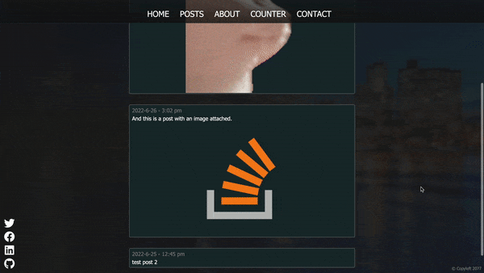

This project was designed with the goal of getting hands-on experience with the following technologies:
All of the pages were created using a combination of Angular, Sass and TypeScript. Sass is a css preprocessor which provides organization and extra utility when styling your pages; It was used in this project to give the pages their look, animations, and responsiveness. If the window is large enough, the navigation bar will appear and span the top of the page. Otherwise, the bar folds into a menu button so the app fits on mobile devices. Angular and TypeScript are responsible for organizing the app into modular components, as well as handling some of the more complex functions(such as the menu button and making requests to the back-end).
While it may seem empty now, that would be because the back-end has been stripped out(for privacy and so the project can be put up on github pages). Using Express as the back-end server, the posts page would send a GET request to retrieve and display post information. Each post contains text, date/time, and optionally an image(which would have to be hosted on the back-end server). The back-end Express server connected to the MongoDB database, retrieves the information and sends it back to the front in JSON format. Here are some images of that in action:
(Mobile)
(Desktop)